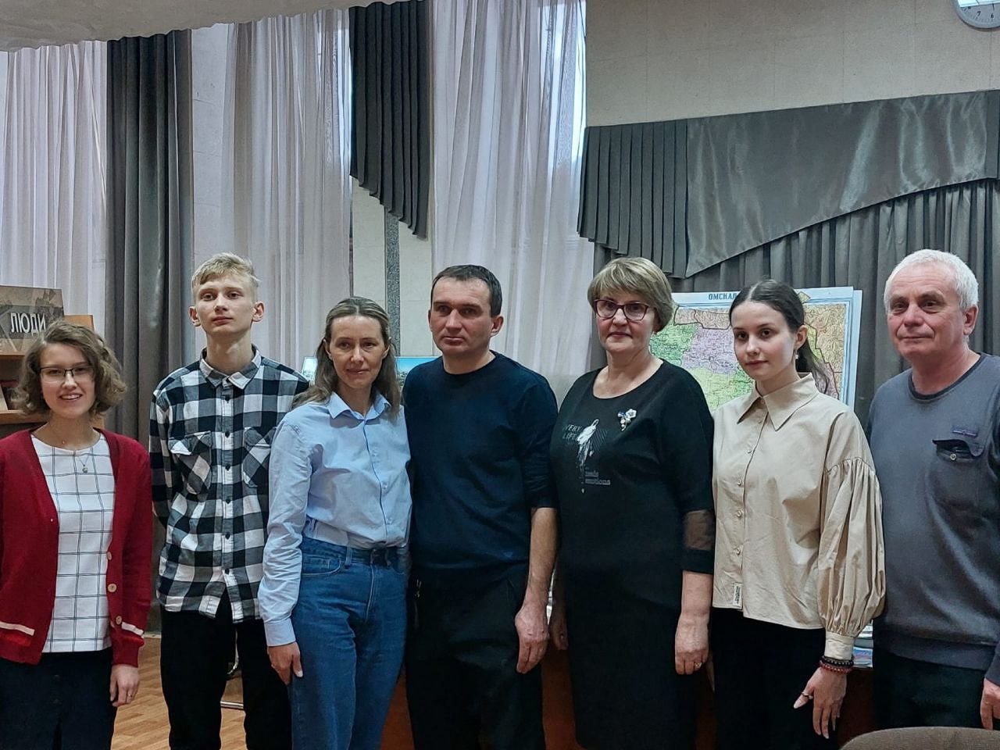

Новоомский: история и современность

Побуждаю обучающихся заниматься исследовательской деятельностью, руковожу их исследованием. В 2023 году, подводя итог четырёхлетнего исследования истории совхоза "Новоомский" как части истории Омского Прииртышья, совместно с ученицей 10 класса Лобановой Татьяной провела лекцию "Новоомский: история и современность" в Центре краеведческой информации Омской государственной областной библиотеки имени А. С. Пушкина в рамках научно-популярного краеведческого лектория в "Пушкине".